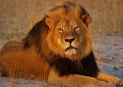

Click here for more information about the lions
They are ofthen called house cats when kept as indoor pets or simply cats when there is no no need to distinguish them from other felids and felines.They are often valued by humans for companionship
There are more than seventy cats breeds recognized by various cat registries..
Cats were venerated in ancient Egypt, but there may have been instances of domestication as early as the Neolithic from around 9,500 years ago (7500 BC).
Did you know that, The felids are a rapidly evolving family of mammals that includes:
Present in Africa and India, the lion typically inhabits grasslands and savannahs, but is absent in dense forests.It is usyally more diural than other big cats, but when persecuted adapts to being active at night and at twilight. A lion pride consists of a few adults males, related females and cubs. Prides vary in size and composition from three to 20 adult lions, depending on habitat and prey availability. Females cooperate when hunting and prey mostly on large ungulates, including antelope, deer, buffalo, zebra and even giraffe.
